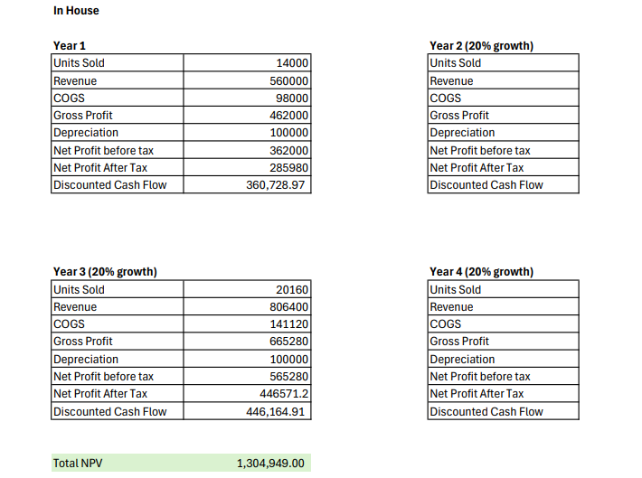
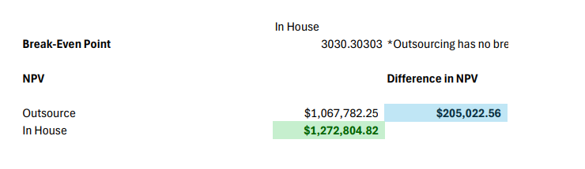
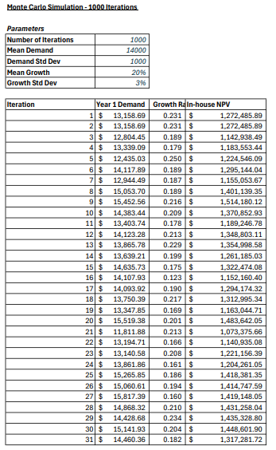

The Decision
Challenged Kitchen Co. is launching a new product line and must choose between building in-house production capability or outsourcing manufacturing. The choice locks in unit economics for four years.
This analysis models both options under fixed demand assumptions and a Monte Carlo simulation across 1,000 scenarios, arriving at a clear recommendation with a quantified financial advantage.
Option A — In-House Production
- Initial equipment investment: $400,000
- Variable cost per unit: $7
- Depreciation: $100,000/year (straight-line)
- Full production control
- IP protection and process flexibility
Option B — Outsourcing
- No initial capital required
- Fixed cost per unit: $18 (all-in)
- Price locked for 4 years
- No depreciation, no fixed overhead
- Supplier dependency and quality risk
Financial Comparison
Year 1 breaks even at 3,030 units. Projected Year 1 demand is 14,000 units — a margin of safety of nearly 11,000 units, or 79% above the break-even threshold. The investment recovers in Year 1 under almost any realistic demand scenario.
Cash Flow Model
| Year | Demand | Revenue | In-House COGS | Outsource COGS | In-House Cash Flow | Outsource Cash Flow |
|---|---|---|---|---|---|---|
| Year 1 | 14,000 | $560,000 | $98,000 | $252,000 | $385,980 | $243,320 |
| Year 2 | 16,800 | $672,000 | $117,600 | $302,400 | $458,976 | $291,984 |
| Year 3 | 20,160 | $806,400 | $141,120 | $362,880 | $546,571 | $350,381 |
| Year 4 | 24,192 | $967,680 | $169,344 | $435,456 | $651,685 | $420,457 |
| NPV (7%) | — | — | — | — | $1,304,949 | $1,089,212 |
In-house cash flow = (Revenue − COGS − Depreciation) × (1 − 0.21) + Depreciation. NPV deducts $400,000 initial investment at t=0. Outsource cash flow = (Revenue − COGS) × (1 − 0.21). Discount rate 7%.
1,000-Iteration Simulation
To test the recommendation under uncertainty, a Monte Carlo simulation varied Year 1 demand (mean 14,000, SD 1,000) and the annual growth rate (mean 20%, SD 3%) across 1,000 iterations.
The simulation never produced a scenario where outsourcing outperformed in-house production. Not in a single iteration out of 1,000. The lower variable cost ($7 vs $18) creates a structural advantage that compounds with volume growth — by Year 4, in-house is producing at 24,192 units with $11/unit more margin than the outsource option.
Why In-House Wins Beyond the Numbers
In-House Advantages
- $11/unit cost advantage widens with scale — Year 4 gap is significant
- Quality control stays internal — critical for consumer kitchen products
- Production scheduling flexibility around demand spikes
- IP and process knowledge stays proprietary
- No supplier dependency or price renegotiation risk after Year 4
Risks to Manage
- $400k upfront — working capital and contingency planning required
- Equipment reliability and maintenance scheduling
- Staff training during ramp-up period
- Volume risk if demand misses Year 1 projections (break-even: 3,030)
- Fixed cost structure less flexible if line is discontinued
The implementation timeline runs across three phases: team formation and equipment specs (Days 1–30), installation and staff training (Days 31–60), and production trials leading to full-scale operations (Days 61–90). Financial requirements include $400,000 equipment plus a 10% contingency of $40,000 and working capital to be determined by inventory policy.
Business Memorandum
The complete business memo was submitted to Mary Challenge, CEO of Challenged Kitchen Co. It includes the executive summary, full financial statements, Monte Carlo methodology, strategic analysis, implementation plan, and appendices.
Excel Model
Screenshots from the corrected financial model.


